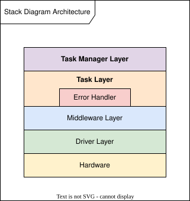
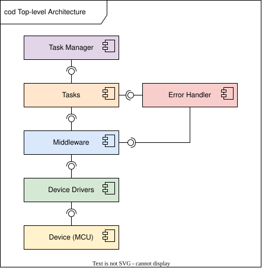
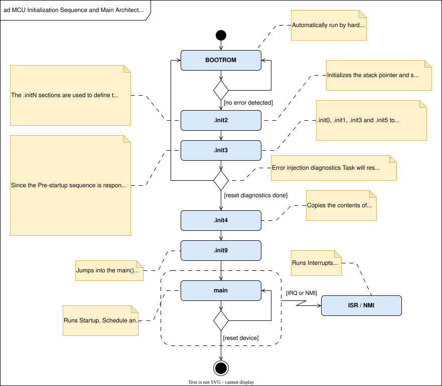

|
 |
FuSa 8-Bit Libraries Safety Framework
|
|
|
FuSa 8-Bit Libraries Safety Framework
|
This is the 1.0.0-alpha.1 version of the Safety Framework and is only provided for evaluation. This is not a completed product, everything is subject to change. However, no major change to the source code is planned until the full release, except for adding missing features. Refer to the Missing Features section for more information on the planned capabilities, features and collateral of the full 1.0.0 release.
The Safety Framework consists of an ASIL C and SIL 2 compliant software framework written in C99 and associated collateral for 8-bit FuSa-compliant devices, such as the AVR SD family. The Safety Framework is strictly functional safety-related and is not a general MCU framework, but it provides a structured application flow that simplifies adding user tasks while ensuring device-level safety. The Safety Framework ensures the device's compliance with several Assumption of Use (AoUs) and software requirements in the System Element out of Context (SEooC) definition and Technical Safety Concept.
The Safety Framework aims to simplify development on the AVR SD family by offering a full device safety solution that is flexible, configurable and expandable. This allows focusing on the application-specific development while ensuring compliance with the requirements needed to reach higher safety integrity levels.
The Safety Framework for AVR SD is developed in compliance with:
The development process has followed a top-down test-driven development approach, where unit tests were developed for the highest abstraction component first, before writing the source code and mocking/stubbing the lower layer. This strategy ensures testable code where only features required by the higher-level components are implemented at the lower levels.
Each component has been thoroughly unit tested, following principles of Equivalence Class and Boundary Testing as well as reaching 100% line, branch and MC/DC code coverage.
The Safety Framework is implemented with a layered Task-based architecture:

The following Task Managers are provided:
The Safety Framework is designed for and tested with the MPLAB XC8 Functional Safety Compiler v2.49.
The Safety Framework is not designed to be compiled with zero optimization (-O0). This is because readability and clarity was prioritized, knowing the compiler will optimize the code. Compiling on -0O will result in a binary size that exceeds the Flash capacity of AVR32SD32. Moreover, the MW_ConfigErrorChannels() API does not have time to configure all ERRCTRL error channels before timing out in CONFIG mode on zero optimization. If compiling with zero optimization is desired for an enhanced debugging experience, it is recommended to compile the midware_error_manager.c file on a higher optimization level in addition to other files out of scope for the debugging to achieve lower Flash consumption.
To get started, use the main_example.c file to run all Task Managers. Use the tasks_config.h file and error_handler_config.h files to configure the Tasks. Write and add application-specific tasks to the application startup schedule and application schedule. Should the execution flow not fit with application requirements, the Tasks can be re-used as is or modified, or the middleware can be used directly, but the intention is that all source code should be usable as is in a Functional Safety application.
Tip: if using the AVR32SD32 Curiosity Nano development board, the ERRCTRL heartbeat signal can be connected to the heartbeat LED by setting the HEARTBEAT_OUTPUT configuration to ENABLED and schedule a startup Task that configures the alternate pin PF5 using the PORTMUX.
See the documentation.html file for comprehensive documentation of all APIs and configurations.
The 1.0.0-alpha.1 release does not have all features and collateral planned for the full 1.0.0 release, including:


